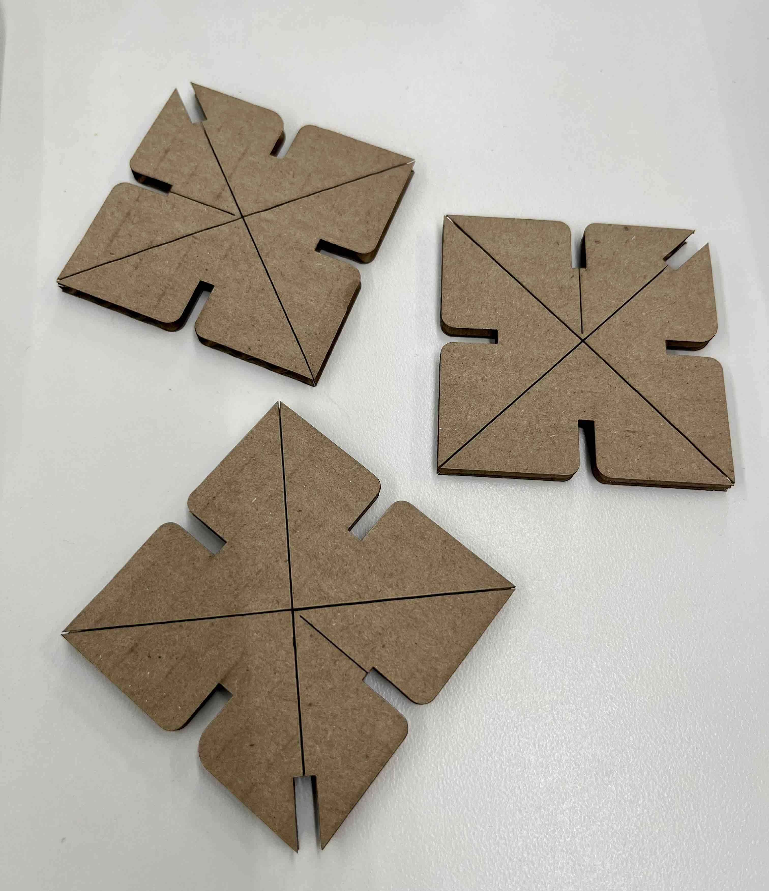
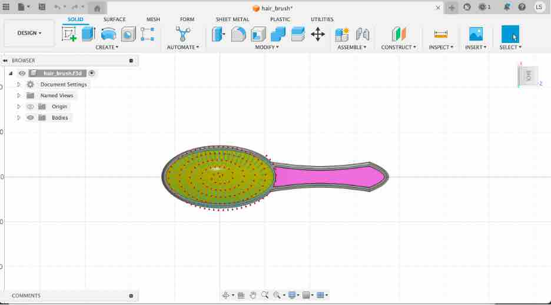

<br>
## 2D Cutting
<h3>Storybook Automata</h3>
Before embarking on 2D modeling and cutting projects, I spent some time thinking about what would be something cool to build out of 2D cutouts. I discovered a whole world of kinetic theatre sculptures which I find inspiring; a convergence of the mechanical and the creative. I hope to learn enough to be able to contruct one of these.
Here's a video of some whimsical examples. In order to do this, besides artistic skills, I would need to construct mechanisms that would convert to different motions in the sculptures. Something to aspire towards.
<br>
<iframe width="560" height="315" src="https://www.youtube.com/embed/kv1CpJi60xQ" title="YouTube video player" frameborder="0" allow="accelerometer; autoplay; clipboard-write; encrypted-media; gyroscope; picture-in-picture; web-share" allowfullscreen></iframe>
<br>
I think you would agree these examples are really inspiring!
<h3>Press Fit Kit</h3>
<br>
<h4>First Attempt</h4>
As wise others who came before me, a journey of a thousand miles should be attempted first wtih the first step. I struggled and failed my first try at creating a simple press fit shape. Here is what happened and my learnings.
<h5>Designs</h5>
I tried to follow a design for a simple square piece with four notches. While I was not successful, I did learn about the different modes in Fusion 360 and various ways to get to an end result. For example, putting the middle of the square piece on the origin enabled creation of one notch and then using the circular repetition the create the other four notches. Mirroring a pattern along a dimensional line is also a useful technique I was able to use for the Scisssors project below. Finally, the consideration of the material the laser takes out in the measurement of the width of the notches to provide enough friction and the fillet method to round the edges and make the material more robust in use.
<figcaption>Simple square with 4 notches, accounting for cardboard thickness and laser material removal. </figcaption>
<img src="Jun22FirstAttemptNotches.jpg" alt="Fillet" class="photo">
<figcaption>Added the fillet to each of the corners. </figcaption>
<img src="Jun22FirstAttemptNotches.jpg" alt="Art Studio Roof" class="photo">
<figcaption>Tried to add 4 additional notches and resulted in errors so I could not render it. Lesson learned would be to try a "prototype" with the more simple design first.</figcaption>
<br>
<h5>Results:</h5><br>
Having failed to extend to a more complex design, I wanted to get a print done in order to go through the entire workflow. This also turned out not as expected...another learning moment.
<figcaption>I learned here that the dimensional lines also transfer to the dxf file and can be in the print unless you ensure they are not RED in the file. I think for my workflow, it is better before exporting to try to remove all the artifacts that I do not want to be cut (or engrave) lines instead of doing this on the 2D laser printer computer as this is a shared resource. </figcaption>

<figcaption> While not what I designed, this is my first cut on the 2D laser printer and because of this, it is still beautiful!</figcaption>
<br>
</p>
<p>
<h4>Second Attempt</h4><br>
A new day, new possibilities. After being met with failure the previous day, I was able to successfully design what I had intended the prior day and print it. The results are below including how I resolved challenges and the two creations I built from my press kit.
<h5>Designs:</h5><br>
This time I saved multiple files to ensure I was able to go from simple to more complex. I started with sketching out the square with the four notches, removed all artifacts like dimensional lines and saved this file. Then I went for the 8 notch design with fillets to turn it into a flower shape.
<br>
<img src="2ndAttempt01.jpg" alt="Sketch of 4 notch design" class="photo">
<figcaption>Second attempt at sketching square with 4 notch design. </figcaption>
<img src="2ndAttempt02.jpg" alt="Extruding the shape" class="photo">
<figcaption>Extruding the shape.</figcaption>
<img src="2ndAttempt03.jpg" alt="Adding the additional 4 notch for an 8 notch design" class="photo">
<figcaption>After saving a back up file, I attempted again the additional 4 notches. Realized making sure I get the right icon before drawing a line will ensure cut lines are connected. This is important to be able to successfully render the image. I found it is better to be accurate the first time than to try to debug the situation later. </figcaption>
<img src="2ndAttempt04.jpg" alt="Turning square into a flower." class="photo">
<figcaption>It's a flower!</figcaption>
<figcaption>Extruded this design into 3D. It is important when switching between sketch and extrude mode to orient yourself to what axis is set. </figcaption>
<img src="2DCutMassProduction.jpg" alt="Creating a print template with many of the designs" class="photo">
<figcaption>While it would have been more prudent to do a test print, I couldn't help myself and printing a whole batch to make a press fit kit. I copied an pasted the design on the sheet before converting to PDF. Fingers cross the notches work...< </figcaption>
<img src="2DPrintSecondAttempt.jpg" alt="Out of the oven" class="photo">
<figcaption>The results reminded me of baking gingerbread cookies! Given all the cardboard I have cut with a knife in my life, I can see how a laser printer could make life so much easier. </figcaption>
Well, it turned out that the pieces fit together looser than I would like. In future I would pick out my piece of cardboard and set the notch width all in variables. I did not do this as diligently as I needed in order to make a few updates. So, I cheated a bit. I found a thicker piece of cardboard and did another print run. And this time it worked!
<br>
<h5>Results:</h5><br>
Using the press fit kit, I made two creations. First one is entitled, "Confrontation with a Dragon" and the second one is "House in a Snow Storm". Enjoy!
<br>
<img src="DragonVersion.jpg" alt="Art Studio Roof" class="photo">
<figcaption>"Confrontations with a Dragon" by Loni Stark. Cardboard.</figcaption>
<br>
<figcaption>"Confrontations with a Dragon" (close up) by Loni Stark. Cardboard.</figcaption>
<br>
<figcaption>"House in a Snow Storm" by Loni Stark. Cardboard.</figcaption>
<br>
<figcaption>"House in a Snow Storm" (top view) by Loni Stark. Cardboard.</figcaption>
<iframe class="video" src="https://www.youtube.com/embed/BlofjHX_mVk" title="YouTube video player" frameborder="0" allow="accelerometer; autoplay; clipboard-write; encrypted-media; gyroscope; picture-in-picture; web-share" allowfullscreen></iframe>
<br>
P.S Another way to solve the issue of too loose joints in a press kit is to paint them :-). The paint adds some additional thickness to the structure, in this case cardboard. I used a gold paint as a reference to Kintsugi which is a Japanese art of jointing broken pieces of pottery using gold. Kintsuji means "to join with gold".
</p>
<p>
<br>
<h4>Scissors</h4><br>
Having completed some simple shapes with some success, I set my sights on my next challenge. A pair of scissors. I chose this mainly because in my "Cat's Cradle" sculpture I have a pair of scissors and thought it would be interesting to make them in a 3D print given the theme of the sculpture. I also love the shape of them and the kitchen pair came apart in two pieces which I thought was clever to ease cleaning.
I first used calipers to measure and diagram the scissors since I wanted to be able to explore the shape before I had to worry about how to represent it in Fusion 360. At first, given my previous exercise, I was going to use geometric shapes to draw it out. For the two blades this made sense. For the handle, using the free form drawing tool was more useful.
After drawing one half of the scissors, I realized I could use the mirror action to create the other pair of scissors and just change a few aspects of the shape which were different. Super excited to have figured this out! I also discovered that all my years sketching for art became useful in drawing out the more organic shapes of the scissors. Overall, I quickly got the handle of drawing out the top view of both parts of the scissors.
<h5>Designs:</h5><br>
<img src="ScissorsPencilDrawing.jpg" alt="Graph paper drawing." class="photo">
<figcaption>Graphite drawing of the scissors on graph paper. Included the measurements in mm taken with my calipers.</figcaption>
<figcaption>Sketched one half of the scissors.</figcaption>
<img src="Scissors02.jpg" alt="Extrude the scissors" class="photo">
<figcaption>Extruded the half to see if all the lines connected. Extruding the scissors made me think if I should start with the baseline of the thickness of the handle or the blades. I think the best appraoch would be to start with the blades and then somehow make the parts of the handle thicker on either side. </figcaption>
<img src="Scissors03.jpg" alt="Mirror" class="photo">
<figcaption>Made a mirror of the design along a dimensional line. I copied only the parts that were the same between the two parts. In hindsight, I may have kept it simple, copy it all over, make sure that worked before changing. I ran into some issues that I had to debug after doing it the manner here. </figcaption>
<img src="Scissors04.jpg" alt="Other shape of scissors" class="photo">
<figcaption>Sketch of both. I am excited to try printing these to see how they turn out before figuring out how to model the 3D view of this...</figcaption>
<br>
Now that I got this point, I am stuck on how to proceed. I thought I would check on the internet for resources and found this great YouTube tutorial. I am always a bit conflicted on forging one's own path and potentially coming up with a creative solution versus finding how others have done it and then starting from there to build new methods. In future, I think I would timebox myself to a few hours of contemplating how I would solve it from "first principles" before reading other approaches so I get the best of both worlds.
<br>
<br>
<iframe width="560" height="315" src="https://www.youtube.com/embed/z078TEfmvJM" title="YouTube video player" frameborder="0" allow="accelerometer; autoplay; clipboard-write; encrypted-media; gyroscope; picture-in-picture; web-share" allowfullscreen></iframe>
<br>
Based on this video, I made a second attempt. In this model I created separate components for the blades and handle, learning but cutting using the extrude method, the combine with the cut and the join with rotation.
<img src="ScissorsNewVersion01.jpg" alt="Scissors Second Attempt" class="photo">
Finally, thought it would be interesting to turn it into an .stl file and bring it into PrusaSlicer to see how it would look. Would be fun to 3D print it.
<img src="Scissorsin3D.jpg" alt="Scissors 3D Print" class="photo">
</p>
<p>
<h4>Hair Brush</h4><br>
While in my bathroom, my hair comb caught my eye. I thought this would be a fun exercise. For this object, I decided to first check online for resources and found this great tutorial. The most interesting part of it was of course how the teeth of the comb are created. I also found the "Pattern" section of this video useful not only for the technique to create multiple components on a given path, but also watching the instructor debug issues in his design which is what I found myself doing for a good part of the time for the Scissors project.
<br>
<iframe width="560" height="315" src="https://www.youtube.com/embed/F3ARZxb-g1U?start=524" title="YouTube video player" frameborder="0" allow="accelerometer; autoplay; clipboard-write; encrypted-media; gyroscope; picture-in-picture; web-share" allowfullscreen></iframe>
<br>
Speaking to a colleague who use to be an aerospace engineer, she mentioned the site and community, GrabCAD which has a library of 3D models (https://grabcad.com/library) and noted that starting from one of these is a great way to learn and also think more about higher level aspects such as, is it a great design. I found this hair brush by Jens Nielsen whcih I downloaded the files and imported to Fusion 360. It was interesting to show/hide the various body components to see how it was all built.
I used this design to modify it by giving it a new handle that I thought was more ergonomic. Interestingly, I liked the look of shiny standless steel, but in terms of the practicality of different heat treatments on drying hair, not the most practical. After designing, it is important to look at it from different angles. In this case, from the side, it is clear that I needed to taper the cylinder of the handle to make it more aesthetically pleasing.
I can see how the use of a CAD drawing saved me the time of making all the "porcupine" needles and I was able to focus more on the design of the handle.

</div>
</p>